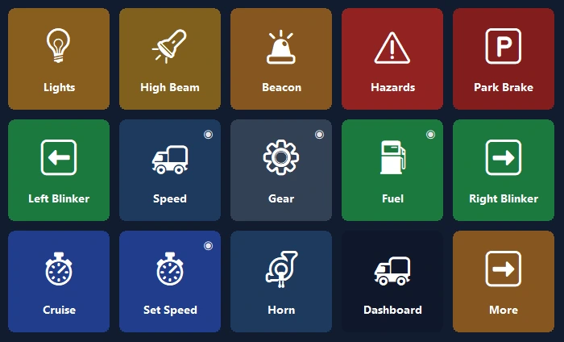
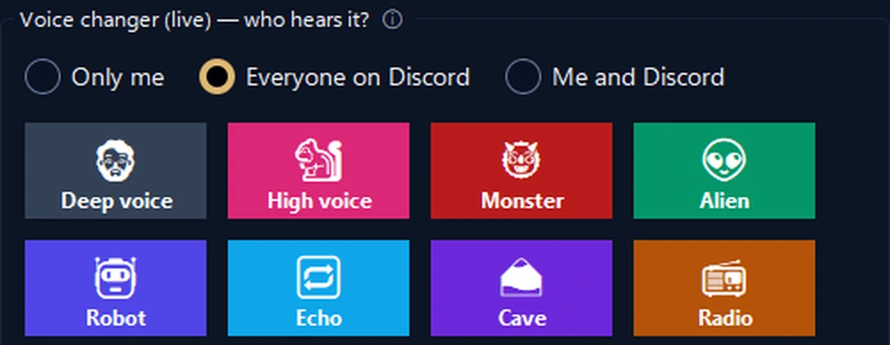

Your phone, your PC's control deck.
One-tap shortcuts, OBS, Discord, Spotify and game dashboards. Over USB, Wi‑Fi or mobile data, end-to-end encrypted.
Your truck's dashboard, now on your phone.
Live speed, RPM, fuel and realistic warning lights. The phone vibrates when you go over the speed limit.
- 🚦A real dashboardSpeed, speed limit, RPM, fuel and arrival time; warning lights come on just like in the game.
- 🕹One-tap controlLights, parking brake, cruise control; look left or right with one tap.
- 📳Zero setupWhen the game starts, the phone offers a ready-made panel and switches to it every time you play.

Run your stream with one hand.
Your phone instead of an expensive device: OBS, sound effects, Discord and music on one screen.
- 🎬OBS controlScenes, recording and streaming, with timers right on the button.
- 📳Stream health alertsThe phone vibrates on congestion or dropped frames.
- 🎙Live voice changerEffects and a soundboard your friends hear on Discord; mute your mic with one tap.

The handiest screen on your desk.
Start in a minute with a ready-made layout; the real logos of your programs are added automatically.
Second screen
Watch your PC screen on the phone and use it as a touch mouse and keyboard.
App volume
Set each program's volume on its own; headphones ↔ speakers with one tap.
Smart pages
Pages follow the program in front; timers, folders and multi-step actions.
Connects from anywhere
No need for the same Wi‑Fi: it also works over mobile data and with several PCs.
Encrypted cloud backup
Your layout is backed up encrypted, without an account, and comes back on a new PC.
Privacy
No account, no ads, no tracking. Your buttons stay on your own devices.
Set up in a minute.
Install the program
Download the free PanelDeck for Windows and open it.
Scan the QR code
The phone app pairs in seconds with the QR code.
Tap
Pick a ready-made layout or build your own buttons.
Pay once, keep it forever.
No subscription, no ads, no tracking. All updates included.
Free
- Connect over USB, Wi‑Fi and mobile data
- 6 buttons on the first page
- Hotkeys, media, open programs, Discord, timer
PanelDeck Pro
- 6 tabs, unlimited folders and buttons
- Second screen, volume sliders, live info
- Truck dashboard, vibration alerts, game profiles
- Encrypted cloud backup
Good to know
Do I need an account?
No. PanelDeck doesn't ask for an account; your buttons stay on your own devices.
Does it work away from home?
Yes. Without the same Wi‑Fi, the phone connects over mobile data, end-to-end encrypted.
Which games does it work with?
Euro Truck Simulator 2 and American Truck Simulator are fully supported. Live dashboards for racing and flight simulators are in beta.
Is there an iPhone version?
Android for now. An iPhone and iPad version is on the roadmap.
What if Windows says it “protected your PC”?
Click “More info” → “Run anyway”. Details in the installation guide.